精确线性代数主要包含两个互相关联的方面:一是一般PID和域 (特别地如有限域 )上的线性代数问题,二是作为特例,整数环
)上的线性代数问题,二是作为特例,整数环 和有理数域上的线性代数问题.精确线性代数的很多问题同数值线性代数是相对应的,如线性方程组求解,矩阵的特征值与特征向量以及矩阵的各种标准型等.但由于精确计算与数值计算的本质不同,二者在算法设计思想等方面则有根本的不同.简单举例来说,如果对上的矩阵进行直接运算,为了保持计算的精确性,将不得不采用有理数的代数运算或引入Bezout等式进行消元.但两种方法随着计算规模的增长，都会出现矩阵元素的大小快速增加的现象，这将使得多数直接算法 (如通常的Gauss消元法)复杂度很高.尽管可以证明,在考虑了矩阵元素规模增长造成的计算复杂度增长之后,多数矩阵精确计算(包括求解线性方程组,计算行列式等)复杂度仍是多项式型的[1],但由于多项式指数相当大,对于实用计算造成很大的困难,难以直接应用.因此,在涉及整数与有理系数矩阵的计算中,一种典型的思路是借助整数的模运算,将主要的计算化归到有限域(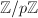,往往也不限于
和有理数域上的线性代数问题.精确线性代数的很多问题同数值线性代数是相对应的,如线性方程组求解,矩阵的特征值与特征向量以及矩阵的各种标准型等.但由于精确计算与数值计算的本质不同,二者在算法设计思想等方面则有根本的不同.简单举例来说,如果对上的矩阵进行直接运算,为了保持计算的精确性,将不得不采用有理数的代数运算或引入Bezout等式进行消元.但两种方法随着计算规模的增长，都会出现矩阵元素的大小快速增加的现象，这将使得多数直接算法 (如通常的Gauss消元法)复杂度很高.尽管可以证明,在考虑了矩阵元素规模增长造成的计算复杂度增长之后,多数矩阵精确计算(包括求解线性方程组,计算行列式等)复杂度仍是多项式型的[1],但由于多项式指数相当大,对于实用计算造成很大的困难,难以直接应用.因此,在涉及整数与有理系数矩阵的计算中,一种典型的思路是借助整数的模运算,将主要的计算化归到有限域(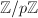,往往也不限于 为素数)上进行,再将结果恢复为整数或有理数的形式;另一种典型的思路是通过某种近似,将主要的计算视为数值型计算,通过数值运算得到主要结果后再恢复为精确结果.对于后者,由于数值型算法先于精确算法得到了比较充分的发展,故在精确线性代数中常常要借用数值线性代数的思想与方法,我们在本章中将多次遇到.
为素数)上进行,再将结果恢复为整数或有理数的形式;另一种典型的思路是通过某种近似,将主要的计算视为数值型计算,通过数值运算得到主要结果后再恢复为精确结果.对于后者,由于数值型算法先于精确算法得到了比较充分的发展,故在精确线性代数中常常要借用数值线性代数的思想与方法,我们在本章中将多次遇到.
本章集中介绍精确线性代数中有普遍应用的几个问题的算法:
- 快速矩阵乘法,这是很多矩阵算法的基础,在数值线性代数中也有广泛的应用.
- 线性方程组求解,包括系数矩阵非奇异的情形与一般系数矩阵下 (多相应于不定方程组)的Diophantine解.
- 行列式的计算,这在计算矩阵的各种标准形时有广泛的应用.
- 矩阵特征多项式与极小多项式的计算.
- 矩阵的标准形式,包括Hermite标准形,Smith标准形与Jordan标准形等.
由于精确线性代数的算法很多,且仍在迅速发展中,我们只能介绍一些基本的算法.更多的算法可以参考我们给出的文献以及它们的文献目录.
 快速矩阵乘法
快速矩阵乘法
在有关矩阵的计算中,矩阵乘法具有基础性的意义.对于 阶矩阵的乘法,常规算法具有
阶矩阵的乘法,常规算法具有 的复杂度.自1968年Strassen[2]发现一种基于分治策略的快速矩阵乘法算法以来,矩阵乘法复杂度的阶数已由3降到2.376[1].下面我们回顾两个经典算法,它们在实际中有着重要的应用.而更多算法虽然渐进复杂度更低,但由于算法过于复杂,且对于有限规模的问题所需运算更多,因而并不实用,可参考[3].[4]
的复杂度.自1968年Strassen[2]发现一种基于分治策略的快速矩阵乘法算法以来,矩阵乘法复杂度的阶数已由3降到2.376[1].下面我们回顾两个经典算法,它们在实际中有着重要的应用.而更多算法虽然渐进复杂度更低,但由于算法过于复杂,且对于有限规模的问题所需运算更多,因而并不实用,可参考[3].[4]
基于向量内积算法的Winograd加速算法
以下讨论主要来自文献[5].
 ,
, ,记
,记 ,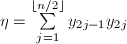,则内积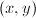可由下式给出:
,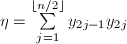,则内积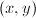可由下式给出:
将这种算法用于 的矩阵元素运算时,由于减少重复计算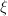,
的矩阵元素运算时,由于减少重复计算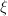, ,可使计算所需的乘法次数减半,但同时使所需的加法运算增加.Winograd算法也是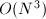的算法,仅适用于小规模的矩阵求积运算,且由于该算法破坏了向量内积的整体间运算,同时增加了内存开销,因而其算法改进价值并不很大.
,可使计算所需的乘法次数减半,但同时使所需的加法运算增加.Winograd算法也是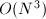的算法,仅适用于小规模的矩阵求积运算,且由于该算法破坏了向量内积的整体间运算,同时增加了内存开销,因而其算法改进价值并不很大.
Strassen算法
Strassen算法(1968)是一种分治策略的算法.它以分块矩阵运算为基础.
下面介绍改进型Strassen算法,它较原始算法[2]需要更少的矩阵加法运算[1].
 (
( 为递归下界),做直接乘法.
为递归下界),做直接乘法.
以上算法的正确性直接代入即可验证.可以看出,每次递归需要7次乘法与15次加法,从而其算法复杂度是 .
.
下面考虑一个技术细节,即对于阶数不是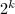的矩阵添加零行零列的问题.很容易想到两种方案,一是在必要时才考虑添加,即在递归过程中,遇到矩阵阶数为奇数的情形则给它添加一个零行(或零列);二是统一添加,即在计算的开始首先考察矩阵的阶数,若它不满足的要求,即给它添加若干个零行零列,使之满足,而在正式计算过程中则不需再考虑矩阵阶数的问题.直观的理论分析可以知道,由于第一种方式一方面将添加零行零列的工作分成许多次完成,增加了很多冗余的判断,另一方面,它逐次添加零行零列的结果是使得矩阵在内存中的存储位置非常零碎,存储结构十分混乱,这两方面因素造成其计算效率大大下降.经实际测试,对于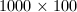阶与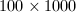阶的系数在 到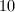之间的整系数矩阵乘法,第二种方案的效率平均较第一种提高了30倍左右.
到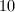之间的整系数矩阵乘法,第二种方案的效率平均较第一种提高了30倍左右.
我们还对随机生成的浮点数矩阵进行了测试,并与经典算法给出的结果做对比,并未见数值稳定性有明显下降.
Strassen算法在之后有许多推广,最优渐进复杂度可以降到 .但在实际中,仅当
.但在实际中,仅当 极大时才有价值,故通常并不采用.可参考[4][3].
极大时才有价值,故通常并不采用.可参考[4][3].
线性方程组
线性方程组的重要性是显而易见的,它不但是许多实际问题的数学模型,而且构成许多算法的基础.在"数值线性代数"部分中我们已经介绍了工程计算中使用的数值算法,在这里我们将介绍线性方程组的精确求解,主要讨论整数系数与多项式系数线性方程组的有理解,一些方法可以推广到一般整区上.
基于中国剩余定理的模算法
求解一般线性方程组的一般方法在任何一本线性代数教材中都可以找到(例如,参见[6]).其典型做法是对线性方程组的系数矩阵与增广矩阵进行行初等变换,将其化为行相抵的行既约阶梯形阵(row-reduced echelon,RRE),即如下形式(最后的0可能是子方阵,也可能没有): 即具有如下特点:
- 非0行的最左非0元素非0,且此1所在行的其余元素均为0;
- 各非0行最左非0元素的位置,随行号增加而右移,若有零行均排在最后.
详言之,若非零矩阵 满足:存在一列整数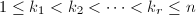,其中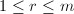(
满足:存在一列整数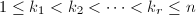,其中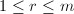( 即矩阵的秩),使得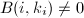,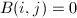,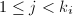,且若
即矩阵的秩),使得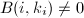,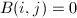,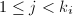,且若 ,则第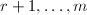行均为0.称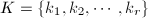为的既约阶梯(reduced echelon,RE)序列,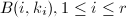称为RRE矩阵的对角元素.若
,则第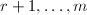行均为0.称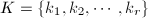为的既约阶梯(reduced echelon,RE)序列,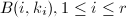称为RRE矩阵的对角元素.若 与行相抵,则也称为的RRE,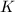为的行RE序列.对于已经化为这种形式的系数矩阵与增广矩阵,我们很容易判断线性方程组是否有解并求出其一般解.在下面我们考察的情形中，非0行往往以一个公共元素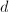开始,对于整系数线性方程组的求解,由此可以避免中间计算过程出现分数.
与行相抵,则也称为的RRE,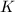为的行RE序列.对于已经化为这种形式的系数矩阵与增广矩阵,我们很容易判断线性方程组是否有解并求出其一般解.在下面我们考察的情形中，非0行往往以一个公共元素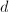开始,对于整系数线性方程组的求解,由此可以避免中间计算过程出现分数.
在本节中,我们将介绍一种适用于整系数与多元多项式系数线性方程组求解的算法[7].在如下算法中,我们需要判断采用模同态的可用性,其判断标准由如下定义的矩阵的正则RE序列表征.为了叙述方便,我们首先引入[6]中的子阵的记号:设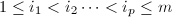,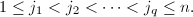 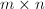阶矩阵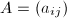中位于第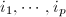行和第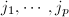列交叉处的元素按原序排成的方阵称为的一个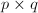阶子阵,记为 记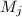为矩阵的前列构成的子矩阵.定义序列
记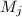为矩阵的前列构成的子矩阵.定义序列 ,其中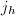为最小的整数使得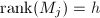.由行变换不改变列向量之间的相关性质可知,即上文定义的行RE序列,而且是唯一的.对于非零矩阵,可以找到一列互异整数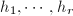,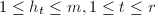满足若记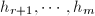为其余的整数,则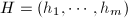构成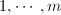的一个排列.记所有这样的序列构成集合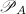,则中,存在一个(按照字典序)最小的序列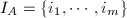.这相当于说,对于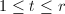,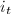为依次选出来的最小的整数使得这些行向量线性无关,而对于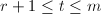,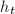被按照原序排好.若为零矩阵,我们很自然地定义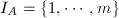.在下面的算法中,我们将用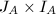的字典序来判断实施的模同态是否改变了某些"本质的"内容,即我们认为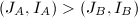(J_B,I_B)$" class="latex-inline" style="vertical-align: -5px" width="138" height="18">,当且仅当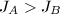J_B$" class="latex-inline" style="vertical-align: -2px" width="60" height="14">,或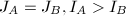I_B$" class="latex-inline" style="vertical-align: -4px" width="126" height="16">.
,其中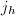为最小的整数使得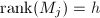.由行变换不改变列向量之间的相关性质可知,即上文定义的行RE序列,而且是唯一的.对于非零矩阵,可以找到一列互异整数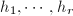,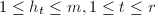满足若记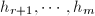为其余的整数,则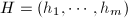构成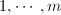的一个排列.记所有这样的序列构成集合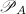,则中,存在一个(按照字典序)最小的序列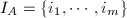.这相当于说,对于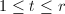,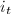为依次选出来的最小的整数使得这些行向量线性无关,而对于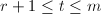,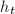被按照原序排好.若为零矩阵,我们很自然地定义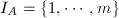.在下面的算法中,我们将用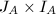的字典序来判断实施的模同态是否改变了某些"本质的"内容,即我们认为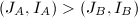(J_B,I_B)$" class="latex-inline" style="vertical-align: -5px" width="138" height="18">,当且仅当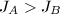J_B$" class="latex-inline" style="vertical-align: -2px" width="60" height="14">,或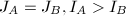I_B$" class="latex-inline" style="vertical-align: -4px" width="126" height="16">.
在定义了矩阵的正则RE序列之后,我们引入如下的正则RRE矩阵.对于阶矩阵,定义
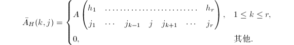对于利用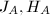的定义可知,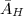为RRE矩阵,且可以证明,与行相抵.特别地,对于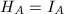,将其记为 ,并称为的正则RRE.很显然,这一标准形式是唯一确定的.对于,定义若为零矩阵,则定义.我们看到的对角线元素都等于.特别地,对于,将简记为或.
,并称为的正则RRE.很显然,这一标准形式是唯一确定的.对于,定义若为零矩阵,则定义.我们看到的对角线元素都等于.特别地,对于,将简记为或.
该算法的整体思路,就是计算线性方程组增广矩阵的CRRE,并利用其得到线性方程组的一般解.其中,前者是算法最核心的部分.我们首先讨论后者的算法,即已知增广矩阵的CRRE,求得线性方程组的一般解的问题.为了讨论最一般的情形,我们设要求解的方程组为,其中为,灏